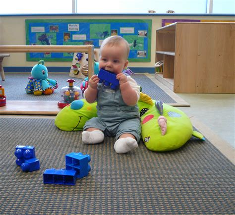

Atras
Inicio
Siguiente

Las guarderias te ofrecen:
~Educacion fisica
~Iniciacion al ingles
~Musica
(xilofono y flauta dulce)
~Visitas comunitarias
~Actividades entre padres e hijos
~Orientacion a padres de familia
~Biblioteca y pizarron interactivo